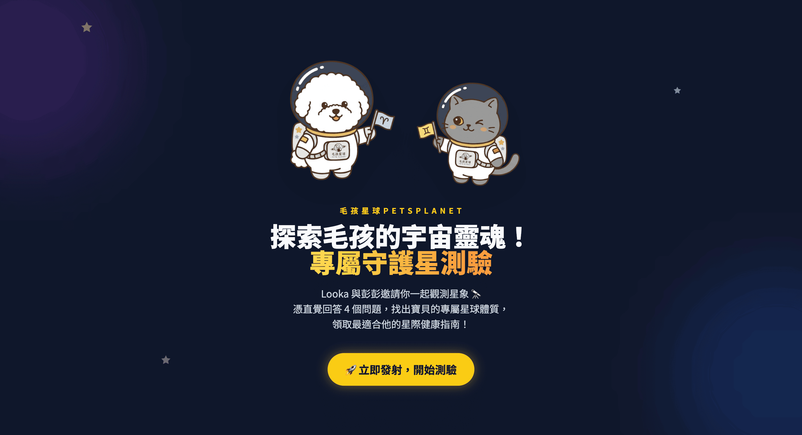
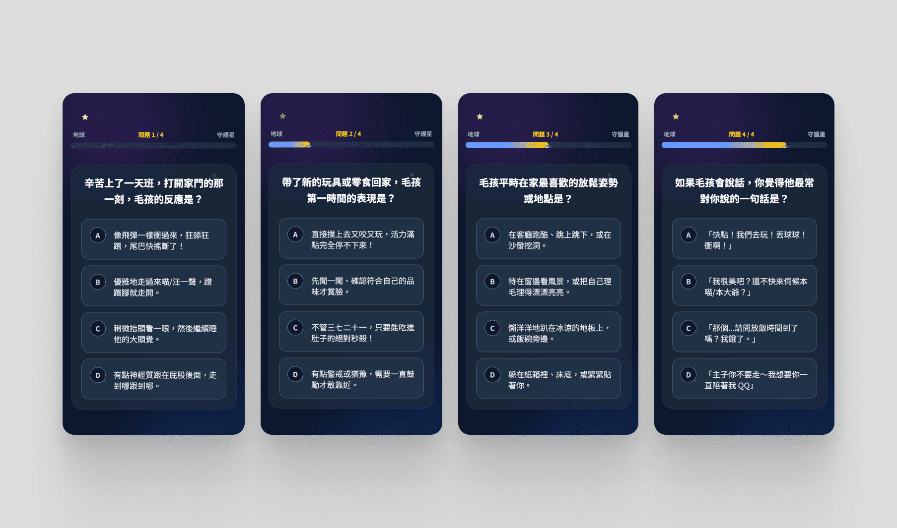
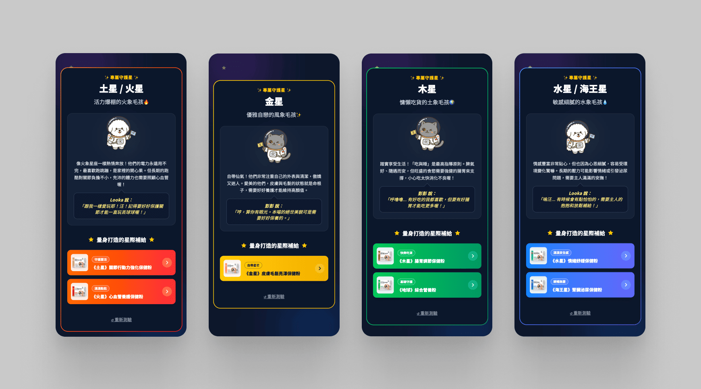

從品牌策略出發，將「星象學 × 寵物健康」的品牌定位轉化為可互動的分眾行銷漏斗。 獨立完成策略企劃、IP 設計與前端開發，約一周內上線，並成為品牌實體展場的互動推廣素材。

毛孩星球的品牌核心語言是「星象學 × 寵物健康」，但這個概念過去只停留在靜態視覺與文案。 我希望讓它變得可以被體驗——讓飼主主動參與，而不是被動接收廣告。
這個測驗的商業邏輯是：飼主對自家毛孩的行為觀察（個性、習慣、反應）其實已經對應到不同的健康需求， 只是他們不自知。測驗的作用是把飼主已知的事轉譯成產品推薦的依據， 用娛樂包裝分眾，用星象語言降低購物的防衛心。
核心命題：如何讓品牌的定位語言從「被看見」變成「被體驗」，同時把趣味互動導向實際的商品轉換？
測驗不只是娛樂，它是一個輕量的分眾行銷漏斗。整體設計圍繞三個目標展開：
這個專案由我一人完整負責，從策略發想到前端開發全程獨立執行。
整體以深色宇宙背景貫穿，強化「星象探測」的沉浸感。每種星象體質有獨立的主色系—— 火象橘紅、風象金黃、土象綠、水象藍紫——讓結果頁一眼可辨識，也強化品牌記憶點。
品牌吉祥物彭彭與路卡以宇航員造型出現，彭彭傲嬌有個性，路卡溫柔帶點膽小， 兩者分別對應不同體質的氣質，讓結果頁多了對話感與角色溫度。

測驗題目頁——4 題、進度條、每題 4 個選項，設計刻意保持輕量

結果頁——星象體質描述、吉祥物台詞、對應產品推薦，各體質配色獨立
上線後獲得內部同事正向回饋，行銷團隊將其採用為實體展場的互動推廣素材—— 測驗在展場現場供訪客即時互動使用，彭彭與路卡的形象也在展場實體印製展出。
這是這個工具從數位延伸到線下場景的具體證明——一個小型互動網頁，最終讓品牌在實體活動中多了一個有溫度的觸點。